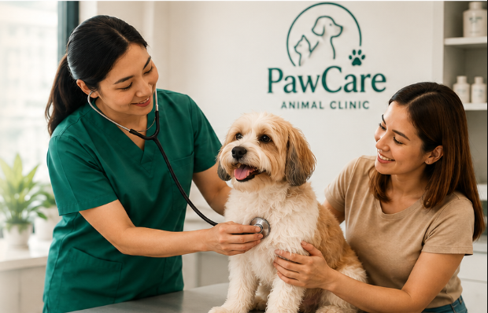
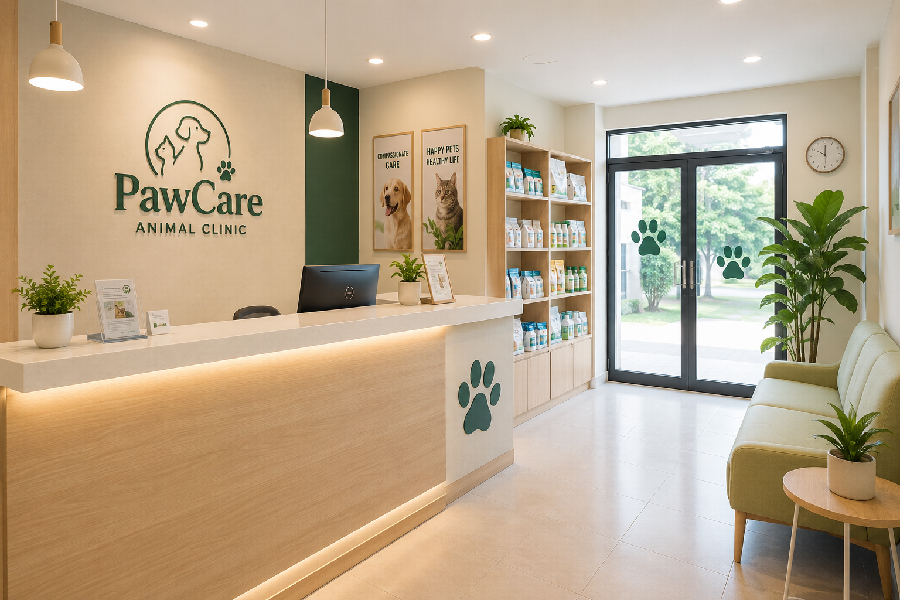
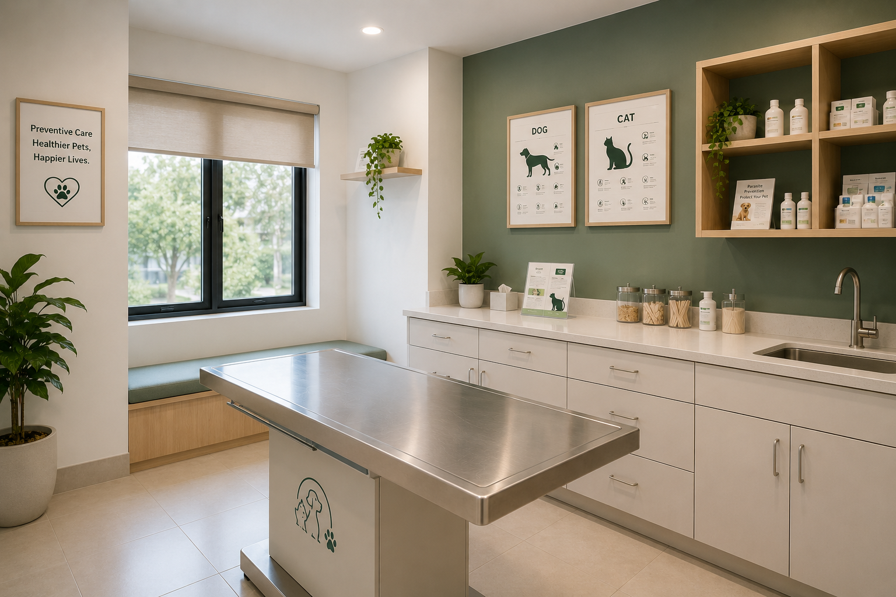
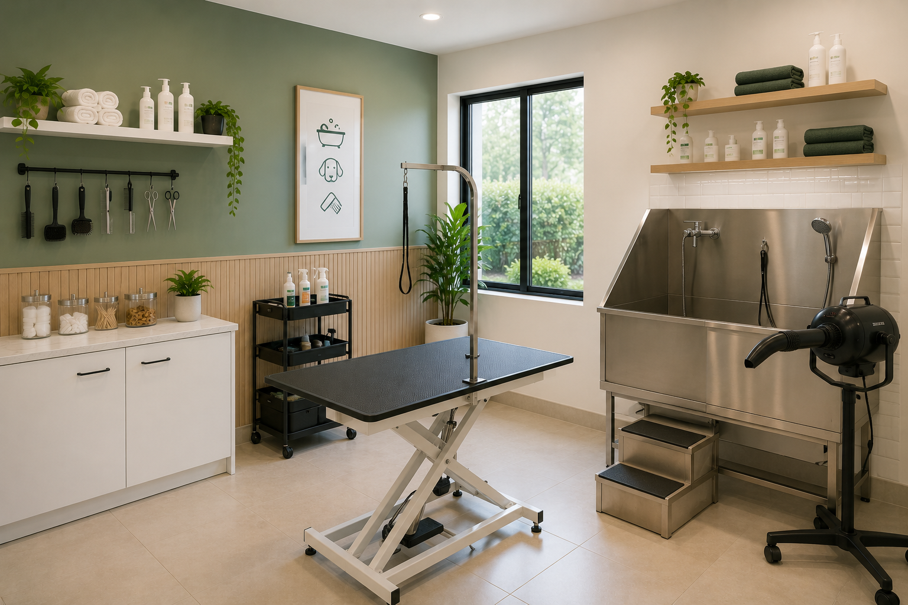
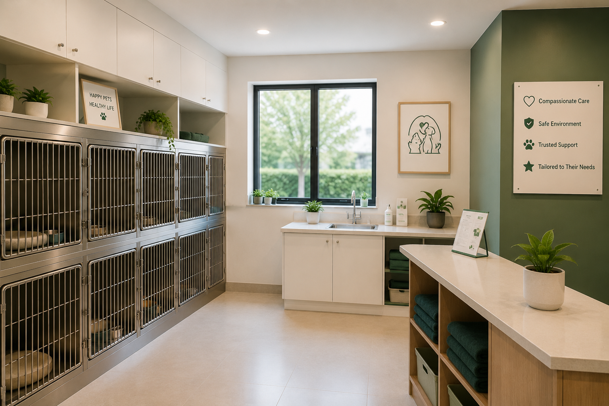

Neighborhood care for dogs and cats
Gentle Veterinary Care for Every Stage of Your Pet's Life
PawCare Animal Clinic provides routine checkups, vaccinations, deworming, basic treatment, grooming support, and preventive care guidance for pets and their families.

About PawCare
A dependable clinic for everyday pet health
PawCare Animal Clinic is a community-based veterinary clinic that helps pet owners keep their dogs and cats healthy through regular checkups, preventive care, vaccination, deworming, and practical health advice.
We explain pet health concerns in clear, friendly language and support first-time pet owners with realistic next steps. Our clinic environment is kept clean, calm, and organized for pets and their families.
- Care for dogs and cats
- Preventive care and responsible pet ownership
- Support for first-time pet owners
- Clear home-care and follow-up guidance

Veterinary services
Practical care for healthier pets
Services are recommended based on your pet's age, history, symptoms, and physical assessment.
Pet Consultation
General health consultations for pets with concerns such as appetite changes, skin issues, vomiting, diarrhea, coughing, or unusual behavior.
Vaccination
Core and recommended vaccines to help protect dogs and cats from common preventable diseases.
Deworming
Routine deworming support for puppies, kittens, and adult pets based on age, weight, and health condition.
Pet Wellness Checkup
Regular health checks to monitor your pet's weight, skin, coat, eyes, ears, teeth, and overall condition.
Basic Laboratory Support
Basic diagnostic support may be recommended when your pet needs further assessment before treatment.
Minor Wound Care
Assessment and basic care for minor cuts, scratches, skin irritation, and small wounds.
Grooming Support
Bathing, coat care, nail trimming, and hygiene support to help keep pets clean and comfortable.
Preventive Care Advice
Practical guidance on nutrition, parasite prevention, vaccination schedules, hygiene, and home care.
Why choose PawCare
Care that makes visits easier to understand
We focus on calm handling, straightforward communication, and useful support between visits.
Compassionate Handling
We handle pets with patience and care to help reduce stress during visits.
Clear Explanations
We explain findings, care options, and next steps in a way pet owners can easily understand.
Preventive Care Focus
We encourage routine checkups, vaccination, parasite prevention, and early health monitoring.
Clean Clinic Environment
Our clinic is designed to stay organized, comfortable, and safe for pets and owners.
Practical Pet Owner Guidance
We provide realistic advice for feeding, grooming, home care, and follow-up monitoring.
Clinic environment
Spaces planned around routine pet care
Each area supports an organized visit while helping pets and owners feel at ease.
Reception Area
A welcoming area where pet owners can check in, ask questions, and wait comfortably before consultation.

Consultation Room
A clean space for physical exams, health discussions, and treatment planning.

Grooming Area
A dedicated area for basic grooming and hygiene services.

Pet Care Area
A calm space for basic care, observation, and routine clinic support.
Meet the veterinarian
Dr. Andrea M. Santos, DVM
Veterinarian
Dr. Andrea M. Santos provides general veterinary care with a focus on preventive health, vaccination, deworming, basic treatment, and pet wellness education. She works closely with pet owners to explain health concerns clearly and recommend practical care steps.
Care focusPreventive health and pet wellnessClinic scheduleMonday to Saturday
Contact the ClinicPet owner feedback
What clients say about their visits
“We brought our dog for vaccination and a general checkup. The staff explained the schedule clearly and gave us helpful reminders for the next visit.”
“Our cat had skin irritation, and the consultation was handled calmly. We appreciated the clear explanation and home care instructions.”
“The clinic feels clean and approachable. It was our puppy's first visit, and they guided us on vaccination, deworming, and feeding.”
“Good experience for basic grooming and health advice. The team was patient with our nervous dog.”
Frequently asked questions
Helpful information before your visit
Contact the clinic if you need guidance about your pet's specific situation.
Do I need an appointment?
Appointments are recommended so the clinic can manage waiting time, but walk-in visits may be accepted depending on daily availability.
What pets do you accept?
The clinic mainly provides care for dogs and cats. For other pets, please contact the clinic first before visiting.
Do you offer vaccinations?
Yes. Vaccination schedules may vary depending on your pet's age, health condition, and previous vaccine history.
When should my pet be dewormed?
Deworming depends on your pet's age, weight, lifestyle, and previous treatment history. The veterinarian will recommend an appropriate schedule.
Do you provide grooming?
Yes. Basic grooming support may include bathing, nail trimming, coat care, and hygiene assistance depending on availability.
What should I bring on my pet's first visit?
Bring any vaccination card, medical record, current medication details, and notes about symptoms or behavior changes.
Do you handle emergency cases?
The clinic provides general veterinary care. For urgent or critical emergencies, pet owners may be referred to a veterinary emergency facility.
Contact PawCare
Plan your pet's clinic visit
For appointments, vaccination schedules, grooming availability, and general inquiries, please contact the clinic during operating hours.
9:00 AM - 6:00 PMEmailhello@pawcareanimalclinic.comLocationSan Jose del Monte, Bulacan